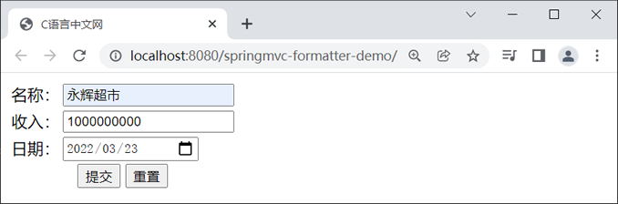
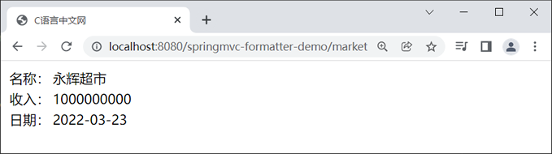
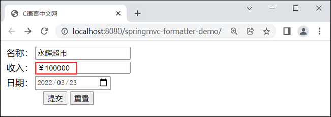
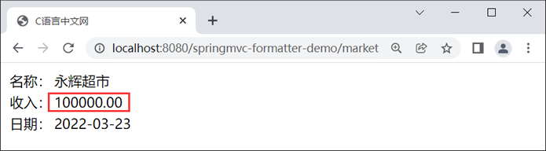

首页 > Spring MVC
Spring MVC格式化器（Formatter）
在实际的项目开发中，经常会涉及到一些需要进行格式化的数据，例如金额、日期等。以金额为例，当金额为 10 万元时，在比较正式的场合往往要写成
Formatter 的作用与 Converter（类型转换器）相似，都是可以将一种数据类型转换成另一种数据类型。但不同的是，Formatter 的源类型必须是 String 类型，而 Converter 的源类型可以是任意数据类型。
Formatter<T> 接口声明如下：
Formatter 接口继承了 Printer<T> 和 Parser<T> 接口，其泛型 T 表示字符串需要转换的目标类型。 在 Printer<T> 和 Parser<T> 接口中，分别包含一个 print() 方法和一个 parse() 方法。Spring MVC 中所有的格式化转换器实现类都必须重写（覆盖）这两个方法。
虽然 Formatter 与 Converter 存在一定的差异，但格式化转换本质上还是属于“类型转换”的范畴，因此在 Spring MVC 中 Formatter（格式化转换器）实际上是委托给 Converter 机制实现的。
Spring 的格式化模块中定义了一个 FormattingConversionService 类，它是 ConversionService 接口（类型转换器的服务接口）的实现类。它与其他的类型转换器实现类不同，它不仅具有类型转换功能，还具有格式化转换功能。
Spring MVC 还专门为 FormattingConversionService 提供了一个名为 FormattingConversionServiceFactroyBean 的工厂类，它主要作用就是在 Spring 上下文中构造 FormattingConversionService 的实例。
除此之外，FormattingConversionServiceFactroyBean 还为以下 2 个格式化注解提供了支持，使得我们可以更加方便地使用 Spring MVC 内置的格式化器，对数据进行格式化转换。
我们知道，只要 Spring MVC 的配置文件中配置一个 <mvc:annotation-driven> 标签，Spring MVC 在启动时就会自动初始化一个 FormattingConversionServiceFactoryBean 类型的实例：ConversionService。
也就是说，我们只要在 Spring MVC 配置文件中配置了 <mvc:annotation-driven> 标签，就可以直接在 Spring MVC 项目中使用 @NumberFormat 注解和 @DateTimeFormat 注解，对 Number 类型和 Date 类型数据进行格式化转换。
@DateTimeFormat 注解主要包含以下 3 个属性。
1. 新建一个名为 springmvc-formatter-demo 的 Spring MVC 工程，并将 Spring MVC 相关的依赖引入到工程中，web.xml 配置如下。
2. 在 src 目录（类路径）下，创建一个 Spring MVC 的配置文件 springMVC.xml，配置内容如下。
4. 在 net.biancheng.c.controller 包下，创建一个名为 MarketController 的 Controller 类，代码如下。
5. 在 webapp/WEB-INF 下新建一个 templates 目录，并在该目录中创建一个 supermarket.html，代码如下：
6. 在 webapp/WEB-INF/templates 目录下，并在该目录中创建一个 success.html，代码如下。
7. 将 springmvc-formatter-demo 部署到 Tomcat 服务器中，启动 Tomcat，然后使用浏览器访问“http://localhost:8080/springmvc-formatter-demo/”，结果如下图。
8. 点击下面的“提交”按钮，结果如下图。
@NumberFormat 注解拥有两个互斥的属性，如下表。
1. 修改 net.biancheng.c.bean 包下 Supermarket 类中的代码，在 BigDecimal 类型的属性 money 上添加一个 @NumberFormat 注解，并指定该属性的样式类型（pattern）为 CURRENCY，即货币数值类型。
2. 重启 Tomcat 服务器，使用浏览器访问“http://localhost:8080/springmvc-formatter-demo/”，并在“收入”一栏中输入“￥1000000”，如下图。
￥100000；而日期也可以被写作多种格式，例如 yyyy-MM-dd、yyyy-MM-dd hh:ss:mm 等。这些数据都要经过一定的格式化处理才能够正常使用。
Formatter 接口
Spring 提供了一个 Formatter<T> 接口， T 表示目标数据类型，它被称为格式化转换器。Formatter 的作用与 Converter（类型转换器）相似，都是可以将一种数据类型转换成另一种数据类型。但不同的是，Formatter 的源类型必须是 String 类型，而 Converter 的源类型可以是任意数据类型。
Formatter<T> 接口声明如下：
package org.springframework.format;
public interface Formatter<T> extends Printer<T>, Parser<T> {
}
Formatter 接口继承了 Printer<T> 和 Parser<T> 接口，其泛型 T 表示字符串需要转换的目标类型。 在 Printer<T> 和 Parser<T> 接口中，分别包含一个 print() 方法和一个 parse() 方法。Spring MVC 中所有的格式化转换器实现类都必须重写（覆盖）这两个方法。
| 方法 | 接口 | 说明 |
|---|---|---|
| T parse(String text, Locale locale) throws ParseException; | Printer<T> |
该方法能够将数据按照一定的格式输出成字符串。 该方法中包含一个 Locale 类型的参数，即该方法可根据地区来做出相应的定制。 |
| String print(T object, Locale locale); | Parser<T> | 该方法能够将满足一定格式的字符串转换为对象。其包含一个 Locale 类型的参数，即该方法可根据国家和地区做出相应的定制。 |
内置格式化转换器
Spring MVC 默认提供了多个内置的格式化器，通过它们，我们可以轻松地实现对日期（Date）类型和数值（Number）类型数据的格式化工作，具体如下。| 内置格式化器 | 说明 |
|---|---|
| NumberFormatter | 实现 Number 与 String 之间的解析与格式化。 |
| CurrencyFormatter | 实现 Number 与 String 之间的解析与格式化（带货币符号）。 |
| PercentFormatter | 实现 Number 与 String 之间的解析与格式化（带百分数符号）。 |
| DateFormatter | 实现 Date 与 String 之间的解析与格式化。 |
虽然 Formatter 与 Converter 存在一定的差异，但格式化转换本质上还是属于“类型转换”的范畴，因此在 Spring MVC 中 Formatter（格式化转换器）实际上是委托给 Converter 机制实现的。
Spring 的格式化模块中定义了一个 FormattingConversionService 类，它是 ConversionService 接口（类型转换器的服务接口）的实现类。它与其他的类型转换器实现类不同，它不仅具有类型转换功能，还具有格式化转换功能。
Spring MVC 还专门为 FormattingConversionService 提供了一个名为 FormattingConversionServiceFactroyBean 的工厂类，它主要作用就是在 Spring 上下文中构造 FormattingConversionService 的实例。
除此之外，FormattingConversionServiceFactroyBean 还为以下 2 个格式化注解提供了支持，使得我们可以更加方便地使用 Spring MVC 内置的格式化器，对数据进行格式化转换。
| 格式化注解 | 说明 |
|---|---|
| @DateTimeFormat 注解 | 使用该注解，能够实现对日期类型数据的格式化 |
| @NumberFormat 注解 | 使用该注解，能够实现对数值类型数据的格式化 |
我们知道，只要 Spring MVC 的配置文件中配置一个 <mvc:annotation-driven> 标签，Spring MVC 在启动时就会自动初始化一个 FormattingConversionServiceFactoryBean 类型的实例：ConversionService。
也就是说，我们只要在 Spring MVC 配置文件中配置了 <mvc:annotation-driven> 标签，就可以直接在 Spring MVC 项目中使用 @NumberFormat 注解和 @DateTimeFormat 注解，对 Number 类型和 Date 类型数据进行格式化转换。
日期格式化
@DateTimeFormat 注解可对 java.util.Date、java.util.Calendar、java.long.Long 等时间类型的数据进行标注，以实现对日期类型的数据进行格式化处理。@DateTimeFormat 注解主要包含以下 3 个属性。
| 属性 | 类型 | 说明 |
|---|---|---|
| pattern | String | 用于指定解析或格式化日期时间的模式，其常用取值包括 yyyy-MM-dd、yyyy-MM-dd hh:mm:ss 等。 |
| iso | DateTimeFormat.ISO |
用于指定解析或格式化日期时间的 ISO 模式，其取值有 4 种：
|
| style | String |
用于指定日期时间的格式。 该属性由两个字符组成，第一个字符表示日期的格式，第二个字符表示时间的格式。
其默认值为“SS”，即日期和时间都采用短格式。 |
示例 1
下面，我们就通过一个简单的案例，来演示下如何使用 @DateTimeFormat 注解对日期进行格式化。1. 新建一个名为 springmvc-formatter-demo 的 Spring MVC 工程，并将 Spring MVC 相关的依赖引入到工程中，web.xml 配置如下。
<?xml version="1.0" encoding="UTF-8"?>
<web-app xmlns="http://xmlns.jcp.org/xml/ns/javaee"
xmlns:xsi="http://www.w3.org/2001/XMLSchema-instance"
xsi:schemaLocation="http://xmlns.jcp.org/xml/ns/javaee http://xmlns.jcp.org/xml/ns/javaee/web-app_4_0.xsd"
version="4.0">
<!--请求和响应的字符串过滤器-->
<filter>
<filter-name>CharacterEncodingFilter</filter-name>
<filter-class>org.springframework.web.filter.CharacterEncodingFilter</filter-class>
<init-param>
<param-name>encoding</param-name>
<param-value>UTF-8</param-value>
</init-param>
<init-param>
<param-name>forceResponseEncoding</param-name>
<param-value>true</param-value>
</init-param>
</filter>
<filter-mapping>
<filter-name>CharacterEncodingFilter</filter-name>
<url-pattern>/*</url-pattern>
</filter-mapping>
<!--来处理 PUT 和 DELETE 请求的过滤器-->
<filter>
<filter-name>HiddenHttpMethodFilter</filter-name>
<filter-class>org.springframework.web.filter.HiddenHttpMethodFilter</filter-class>
</filter>
<filter-mapping>
<filter-name>HiddenHttpMethodFilter</filter-name>
<url-pattern>/*</url-pattern>
</filter-mapping>
<!-- 配置SpringMVC的前端控制器，对浏览器发送的请求统一进行处理 -->
<servlet>
<servlet-name>dispatcherServlet</servlet-name>
<servlet-class>org.springframework.web.servlet.DispatcherServlet</servlet-class>
<!--配置 DispatcherServlet 的一个初始化参数：spring mvc 配置文件按的位置和名称-->
<init-param>
<param-name>contextConfigLocation</param-name>
<param-value>classpath:springMVC.xml</param-value>
</init-param>
<!--作为框架的核心组件，在启动过程中有大量的初始化操作要做
而这些操作放在第一次请求时才执行会严重影响访问速度
因此需要通过此标签将启动控制DispatcherServlet的初始化时间提前到服务器启动时-->
<load-on-startup>1</load-on-startup>
</servlet>
<servlet-mapping>
<servlet-name>dispatcherServlet</servlet-name>
<!--设置springMVC的核心控制器所能处理的请求的请求路径
/所匹配的请求可以是/login或.html或.js或.css方式的请求路径
但是/不能匹配.jsp请求路径的请求-->
<url-pattern>/</url-pattern>
</servlet-mapping>
</web-app>
2. 在 src 目录（类路径）下，创建一个 Spring MVC 的配置文件 springMVC.xml，配置内容如下。
<?xml version="1.0" encoding="UTF-8"?>
<beans xmlns="http://www.springframework.org/schema/beans"
xmlns:xsi="http://www.w3.org/2001/XMLSchema-instance"
xmlns:context="http://www.springframework.org/schema/context"
xmlns:mvc="http://www.springframework.org/schema/mvc"
xsi:schemaLocation="http://www.springframework.org/schema/beans
http://www.springframework.org/schema/beans/spring-beans.xsd
http://www.springframework.org/schema/context
https://www.springframework.org/schema/context/spring-context.xsd http://www.springframework.org/schema/mvc https://www.springframework.org/schema/mvc/spring-mvc.xsd">
<!--开启组件扫描-->
<context:component-scan base-package="net.biancheng.c"></context:component-scan>
<!-- 配置 Thymeleaf 视图解析器 -->
<bean id="viewResolver"
class="org.thymeleaf.spring5.view.ThymeleafViewResolver">
<property name="order" value="1"/>
<property name="characterEncoding" value="UTF-8"/>
<property name="templateEngine">
<bean class="org.thymeleaf.spring5.SpringTemplateEngine">
<property name="templateResolver">
<bean class="org.thymeleaf.spring5.templateresolver.SpringResourceTemplateResolver">
<!-- 视图前缀 -->
<property name="prefix" value="/WEB-INF/templates/"/>
<!-- 视图后缀 -->
<property name="suffix" value=".html"/>
<property name="templateMode" value="HTML5"/>
<property name="characterEncoding" value="UTF-8"/>
</bean>
</property>
</bean>
</property>
</bean>
<!--view-name：设置请求地址所对应的视图名称-->
<mvc:view-controller path="/" view-name="supermarket"></mvc:view-controller>
<!--注解驱动-->
<mvc:annotation-driven></mvc:annotation-driven>
</beans>
3. 在 net.biancheng.c.bean 包下，创建一个名为 Supermarket 的实体类，代码如下。注意：在 Spring MVC 的配置文件中，尤其需要注意一定要配置 <mvc:annotation-driven> 标签，这是我们使用 @DateTimeFormat 注解进行对数据进行格式化的先决条件。
package net.biancheng.c.bean;
import org.springframework.format.annotation.DateTimeFormat;
import java.math.BigDecimal;
import java.util.Date;
/**
* @author C语言中文网
*/
public class Supermarket {
private String name;
@DateTimeFormat(pattern = "yyyy-MM-dd")
private Date date;
private BigDecimal money;
public String getName() {
return name;
}
public void setName(String name) {
this.name = name;
}
public BigDecimal getMoney() {
return money;
}
public void setMoney(BigDecimal money) {
this.money = money;
}
public Date getDate() {
return date;
}
public void setDate(Date date) {
this.date = date;
}
@Override
public String toString() {
return "Supermarket{" +
"name='" + name + '\'' +
", date=" + date +
", money=" + money +
'}';
}
}
4. 在 net.biancheng.c.controller 包下，创建一个名为 MarketController 的 Controller 类，代码如下。
package net.biancheng.c.controller;
import net.biancheng.c.bean.Supermarket;
import org.springframework.stereotype.Controller;
import org.springframework.ui.Model;
import org.springframework.web.bind.annotation.RequestMapping;
import org.springframework.web.bind.annotation.RequestMethod;
/**
* @author C语言中文网
*/
@Controller
public class MarketController {
@RequestMapping(value = "/market", method = RequestMethod.POST)
public String login(Supermarket market, Model model) {
model.addAttribute("market", market);
return "success";
}
}
5. 在 webapp/WEB-INF 下新建一个 templates 目录，并在该目录中创建一个 supermarket.html，代码如下：
<!DOCTYPE html>
<html lang="en" xmlns:th="http://www.thymeleaf.org">
<head>
<meta charset="UTF-8">
<title>C语言中文网</title>
</head>
<body>
<form th:action="@{/market}" method="post">
<table>
<tr>
<td>名称：</td>
<td><input type="text" name="name" required><br></td>
</tr>
<tr>
<td>收入：</td>
<td><input type="text" name="money" required><br></td>
</tr>
<tr>
<td>日期：</td>
<td><input type="date" name="date" required><br></td>
</tr>
<tr>
<td colspan="2" align="center">
<input type="submit" value="提交">
<input type="reset" value="重置">
</td>
</tr>
</table>
</form>
</body>
</html>
6. 在 webapp/WEB-INF/templates 目录下，并在该目录中创建一个 success.html，代码如下。
<!DOCTYPE html>
<html lang="en" xmlns:th="http://www.thymeleaf.org">
<head>
<meta charset="UTF-8">
<title>C语言中文网</title>
</head>
<body>
<table>
<tr>
<td>名称：</td>
<td th:text="${market.getName()}"></td>
</tr>
<tr>
<td>收入：</td>
<td th:text="${market.getMoney()}"></td>
</tr>
<tr>
<td>日期：</td>
<td th:text="${#dates.format(market.getDate(),'yyyy-MM-dd')}"></td>
</tr>
</table>
</body>
</html>
7. 将 springmvc-formatter-demo 部署到 Tomcat 服务器中，启动 Tomcat，然后使用浏览器访问“http://localhost:8080/springmvc-formatter-demo/”，结果如下图。

图1：输入超市业绩
图1：输入超市业绩
8. 点击下面的“提交”按钮，结果如下图。

图2：展示超市业绩
图2：展示超市业绩
数值格式化
@NumberFormat 注解可以用来格式化任何数字基本类型（如 int、long 等）或 java.lang.Number 类型的实例（如 BigDecimal、Integer 等)。@NumberFormat 注解拥有两个互斥的属性，如下表。
| 属性 | 类型 | 说明 |
|---|---|---|
| style | NumberFormat.Style |
该属性用于指定数值的样式类型，其取值有以下 4 种：
|
| pattern | String | 该属性用于自定义数值的样式星星，例如 #,### |
示例 2
下面我们就来通过一个实例，来演示下如何使用 @NumberFormat 注解对数值类型的数据进行格式化。1. 修改 net.biancheng.c.bean 包下 Supermarket 类中的代码，在 BigDecimal 类型的属性 money 上添加一个 @NumberFormat 注解，并指定该属性的样式类型（pattern）为 CURRENCY，即货币数值类型。
package net.biancheng.c.bean;
import org.springframework.format.annotation.DateTimeFormat;
import org.springframework.format.annotation.NumberFormat;
import java.math.BigDecimal;
import java.util.Date;
/**
* @author C语言中文网
*/
public class Supermarket {
private String name;
@DateTimeFormat(pattern = "yyyy-MM-dd")
private Date date;
/**
* 使用 @NumberFormat 注解格式化数值
*/
@NumberFormat(style = NumberFormat.Style.CURRENCY)
private BigDecimal money;
public String getName() {
return name;
}
public void setName(String name) {
this.name = name;
}
public BigDecimal getMoney() {
return money;
}
public void setMoney(BigDecimal money) {
this.money = money;
}
public Date getDate() {
return date;
}
public void setDate(Date date) {
this.date = date;
}
@Override
public String toString() {
return "Supermarket{" +
"name='" + name + '\'' +
", date=" + date +
", money=" + money +
'}';
}
}
2. 重启 Tomcat 服务器，使用浏览器访问“http://localhost:8080/springmvc-formatter-demo/”，并在“收入”一栏中输入“￥1000000”，如下图。

图3：输入货币
3. 点击下方的“提交”按钮，结果如下图。图3：输入货币

图4：货币展示
图4：货币展示
关注公众号「站长严长生」，在手机上阅读所有教程，随时随地都能学习。内含一款搜索神器，免费下载全网书籍和视频。

微信扫码关注公众号